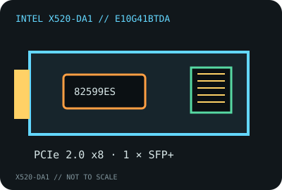

[ MODEL-SPECIFIC NETWORK HARDWARE RECORD ]
Intel Ethernet Converged Network Adapter X520-DA1
Single-port 10GbE SFP+ adapter with exact Intel ordering code E10G41BTDA. This one-port model is distinct from the already cataloged X520-DA2 and X520-T2 variants.

IDENTIFICATION: Intel model X520-DA1; ordering code E10G41BTDA. Keep the product SKU distinct from X520-DA2, X520-T2 and OEM boards using related 82599 silicon.
Exact SKU, interface and compatibility
| Exact model / SKU / revision | Intel Ethernet Converged Network Adapter X520-DA1, product code E10G41BTDA. The ordering code identifies the card SKU; record board revision and Intel label from the specimen. |
|---|---|
| Controller | Intel 82599ES 10GbE controller. |
| Bus, ports and connectors | PCI Express 2.0 x8; one SFP+ cage. Fiber uses a compatible SFP+ optic and duplex LC fiber; direct-attach copper uses a supported SFP+ DAC. |
| Per-port link rates | 10GbE with supported SFP+ modules/DACs. 1GbE operation is module- and driver-dependent; the adapter is not a 2.5GbE or 5GbE NBASE-T card. |
| Driver and operating systems | Intel’s legacy X520 package uses ixgbe on Linux and provides specified Windows Server and VMware ESXi driver bundles. The adapter is legacy; check the Intel release notes for the target OS, signed-driver availability, NVM and exact PCI ID before installation. |
| Compatibility caveats | Requires an electrically x8 PCIe connection for rated adapter bandwidth. Use Intel-supported optical transceivers or DACs and compatible far-end equipment; unsupported module coding or firmware can prevent link-up. |
| Variant warning | DA1 means one SFP+ port. Do not reuse DA2 or T2 connector counts, thermal assumptions, board outlines or SKU information. |
Identification and testing
Confirm the E10G41BTDA marking, controller/device ID, SFP+ module part number and driver version. A host link reporting x4 or a lower PCIe generation can limit aggregate bandwidth even if the card fits physically.
Intel specifications and product brief
- Intel Ethernet products and support indexManufacturer documentation index; use the exact DA1 ordering code to distinguish card variants.
- Intel Ethernet X520 Server Adapters Product Brief (PDF)Manufacturer family product brief; compare DA1 details against the SKU entry.
- Intel Ethernet SFP+ optics product brief (PDF)Manufacturer media compatibility context; confirm supported optics for this adapter and its driver.
- Intel Ethernet adapter driver supportManufacturer driver and operating-system support guidance.